Animation review · আপনার চাকরি কি আসলেই সেফ? · প্রথম ১ মিনিটAnimation review · আপনার চাকরি কি আসলেই সেফ? · প্রথম ১ মিনিট
Five-phase inspection for silhouette, anticipation, contact, weight, follow-through, secondary motion, gaze and settling. Pixel delta is a diagnostic—not a substitute for animator judgment.
001 · questions job safety
(টাইটেল কার্ড): আপনার চাকরি কি আসলেই সেফ?
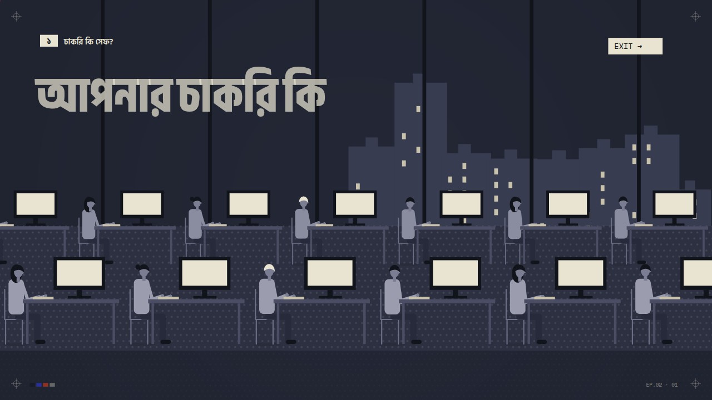
START · 0.12s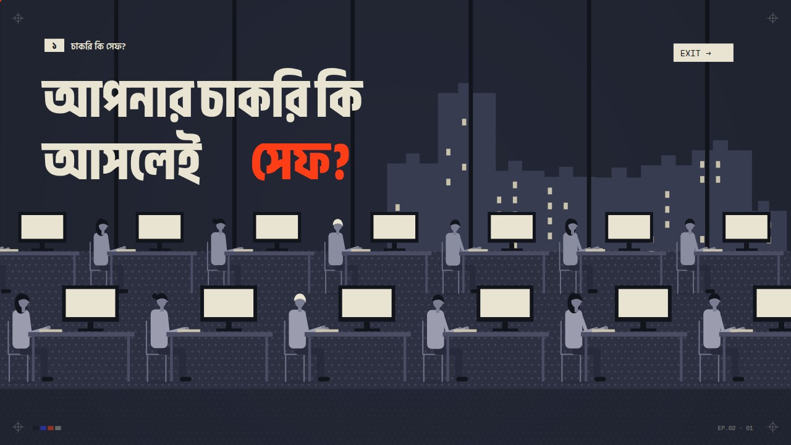
ANTICIPATION · 0.80s · Δ 7.25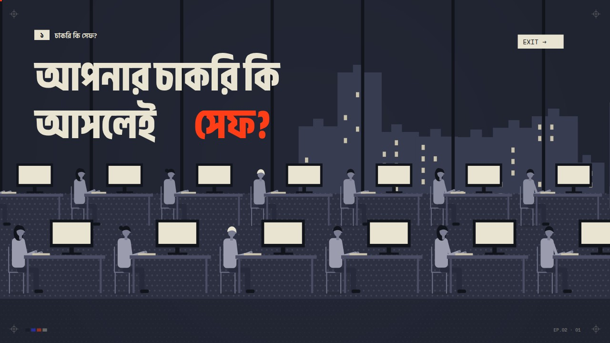
ACTION PEAK · 2.00s · Δ 4.30SETTLE · 3.20s · Δ 1.35END · 3.88s · Δ 0.14Motivation: The threatened subject is visible before the argument begins. · Contact: all monitors and workers establish a functioning workplace; hands and any held prop share the same rig socket. · Weight: Standing actors shift over the supporting foot; seated actors remain anchored through hips and chair.
Follow-through: The action settles with a readable hold before hard cut to dated offer. · Secondary: night office uses offset breathing, tool response or environmental motion without synchronized looping. · Gaze: Head direction leads toward the active hand, evidence or conversation partner.
002 · worker receives a dated offer
২৬ অক্টোবর। মাইক্রোসফট তাদের প্রায় ৬০ হাজার কর্মীকে একটা অফার দিছে।
START · 4.18s ANTICIPATION · 5.20s · Δ 0.24
ANTICIPATION · 5.20s · Δ 0.24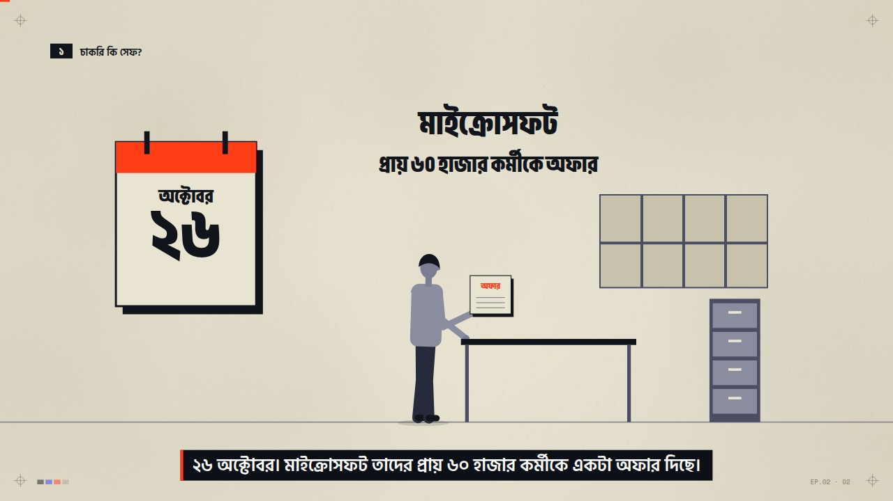
ACTION PEAK · 7.00s · Δ 0.23SETTLE · 8.80s · Δ 0.04END · 9.82s · Δ 0.09 Motivation: Date, company and offer are read in one glance. · Contact: hand closes on the offer beside the dated calendar; hands and any held prop share the same rig socket. · Weight: Standing actors shift over the supporting foot; seated actors remain anchored through hips and chair.
Follow-through: The action settles with a readable hold before cut closer to exchange desk. · Secondary: personnel office uses offset breathing, tool response or environmental motion without synchronized looping. · Gaze: Head direction leads toward the active hand, evidence or conversation partner.
003 · money is exchanged for departure
অফারটা সিম্পল: টাকা নেন, চাকরি ছাড়েন।
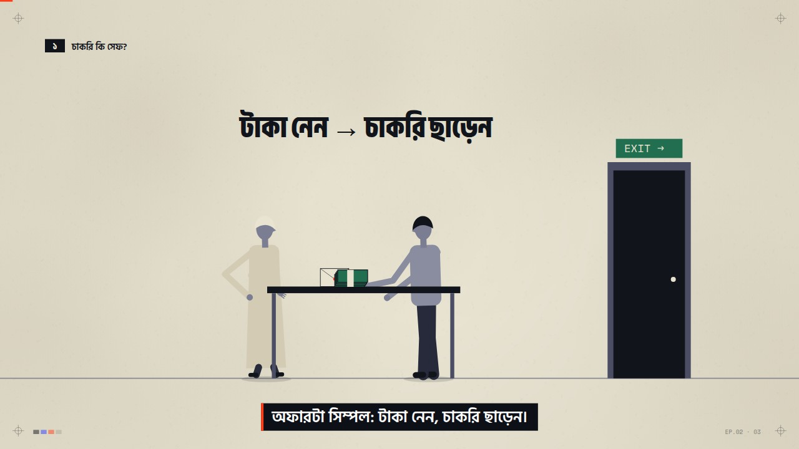
START · 10.09s ANTICIPATION · 10.60s · Δ 0.30
ANTICIPATION · 10.60s · Δ 0.30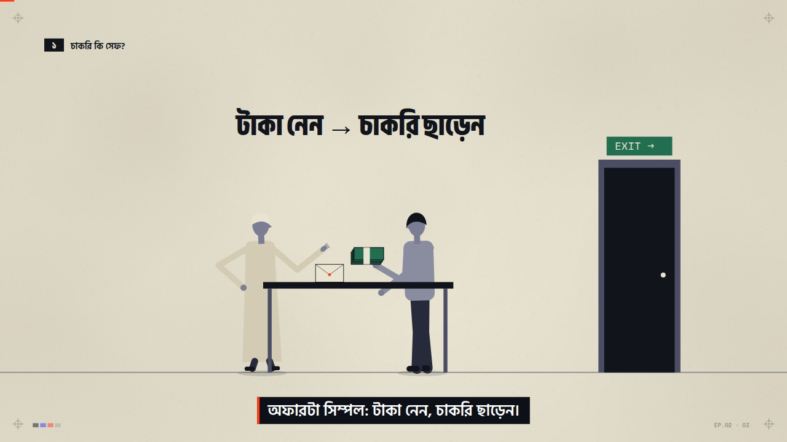
ACTION PEAK · 11.50s · Δ 0.34 SETTLE · 12.40s · Δ 0.15
SETTLE · 12.40s · Δ 0.15 END · 12.91s · Δ 0.04
END · 12.91s · Δ 0.04Motivation: The line becomes an unmistakable transaction and consequence. · Contact: cash packet meets the receiving wrist; hands and any held prop share the same rig socket. · Weight: Standing actors shift over the supporting foot; seated actors remain anchored through hips and chair.
Follow-through: The action settles with a readable hold before cut to abstract headcount. · Secondary: exit desk uses offset breathing, tool response or environmental motion without synchronized looping. · Gaze: Head direction leads toward the active hand, evidence or conversation partner.
004 · guide reveals one quarter of the company
৬০ হাজার মানে পুরা কোম্পানির প্রায় চার ভাগের এক ভাগ।
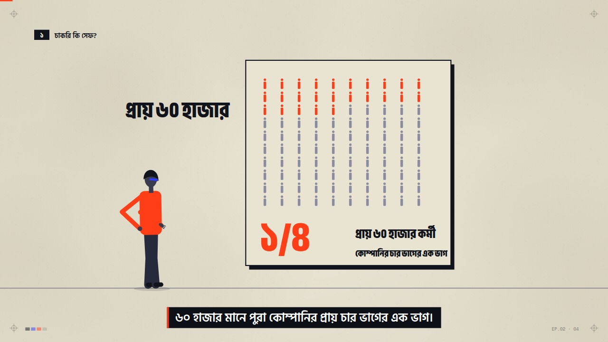
START · 13.12s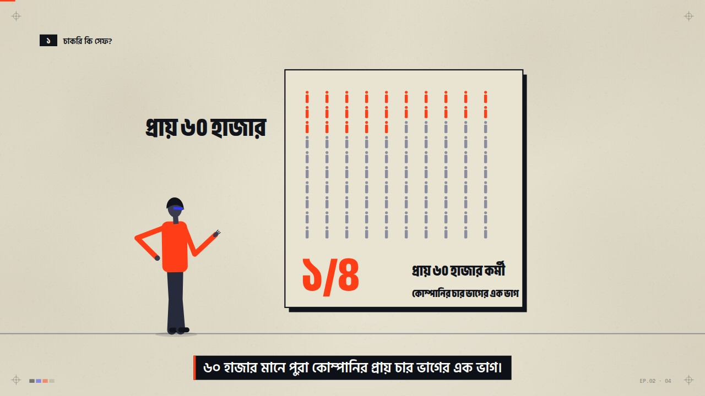
ANTICIPATION · 13.80s · Δ 0.26 ACTION PEAK · 15.00s · Δ 0.24
ACTION PEAK · 15.00s · Δ 0.24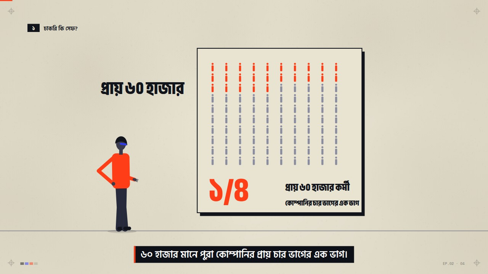
SETTLE · 16.20s · Δ 0.19END · 16.88s · Δ 0.10Motivation: Literal geometry protects the numerical relationship. · Contact: guide points at the highlighted quarter; hands and any held prop share the same rig socket. · Weight: Standing actors shift over the supporting foot; seated actors remain anchored through hips and chair.
Follow-through: The action settles with a readable hold before expand outward to multiple companies. · Secondary: headcount diagram uses offset breathing, tool response or environmental motion without synchronized looping. · Gaze: Head direction leads toward the active hand, evidence or conversation partner.
005 · workers leave several employers
আর এইটা একা মাইক্রোসফটের গল্প না।
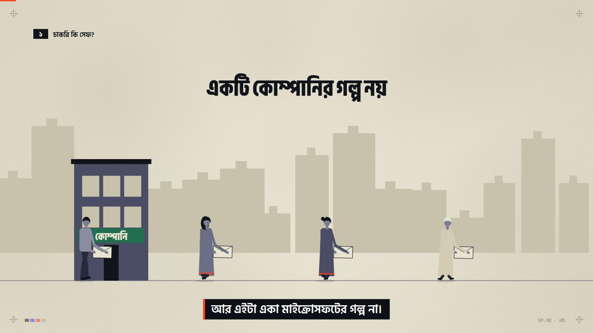
START · 17.09s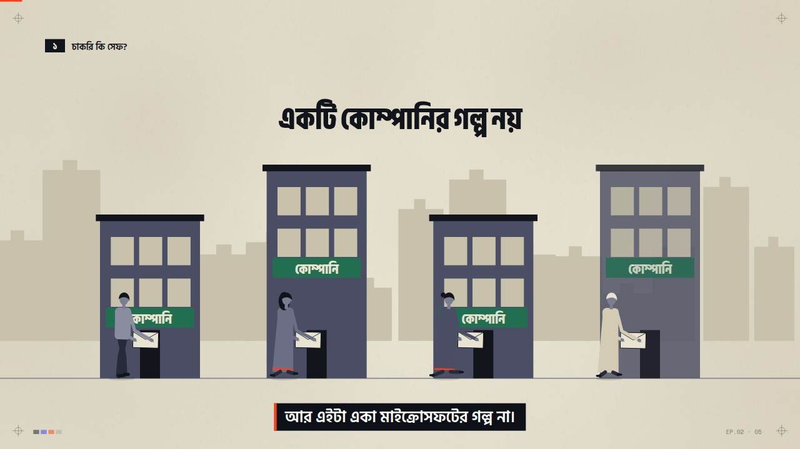
ANTICIPATION · 17.60s · Δ 10.85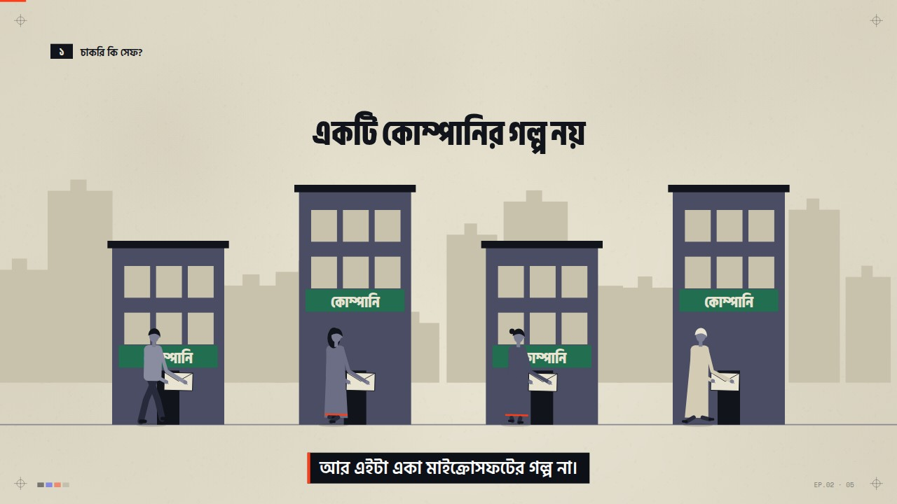
ACTION PEAK · 18.50s · Δ 2.28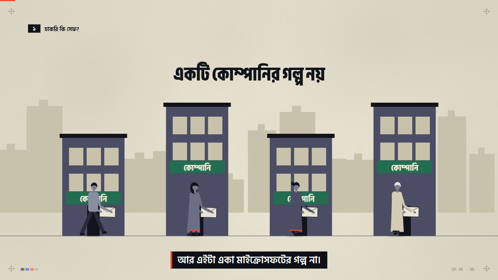
SETTLE · 19.40s · Δ 1.83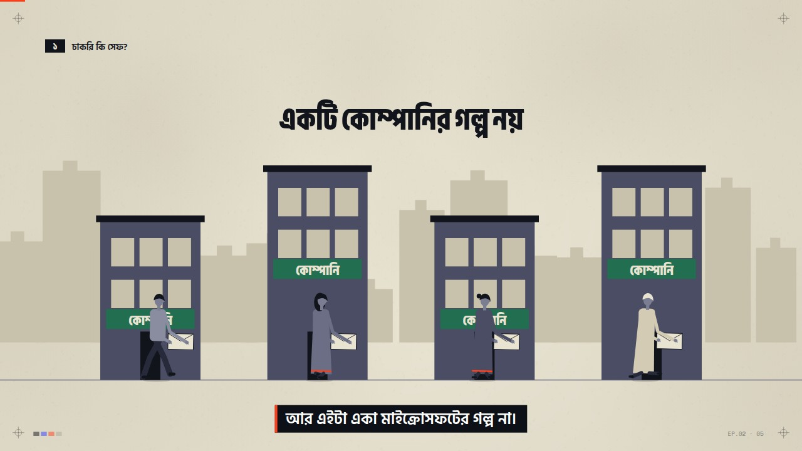
END · 19.91s · Δ 0.46Motivation: Breadth is shown by multiple employers rather than repeated text. · Contact: departures occur across the whole row; hands and any held prop share the same rig socket. · Weight: Standing actors shift over the supporting foot; seated actors remain anchored through hips and chair.
Follow-through: The action settles with a readable hold before cut to national report board. · Secondary: city institutions uses offset breathing, tool response or environmental motion without synchronized looping. · Gaze: Head direction leads toward the active hand, evidence or conversation partner.
006 · counter rises to the narrated US layoff total
এই বছরের প্রথম নয় মাসে আমেরিকার কোম্পানিগুলা প্রায় ১ লাখ ২০ হাজার ছাঁটাইয়ের কারণ হিসেবে সরাসরি এআই এর নাম নিছে।
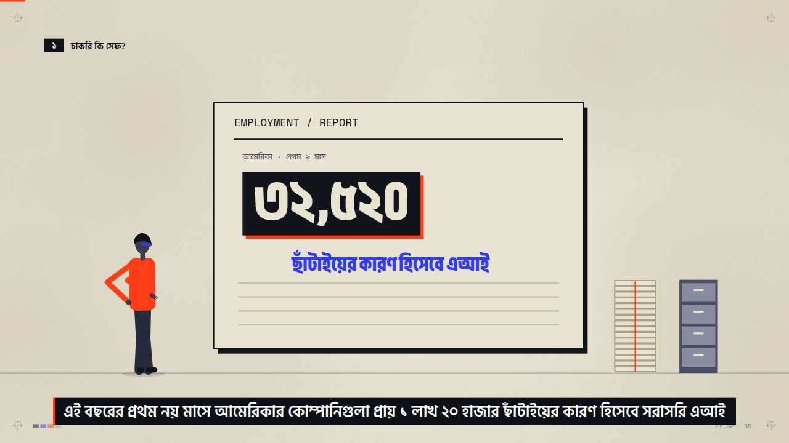
START · 20.24s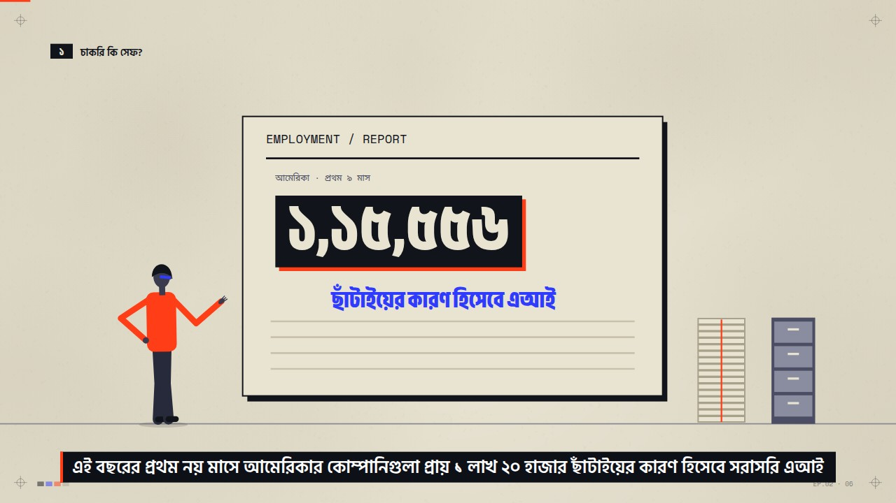
ANTICIPATION · 21.60s · Δ 1.93ACTION PEAK · 24.00s · Δ 7.70SETTLE · 26.40s · Δ 0.05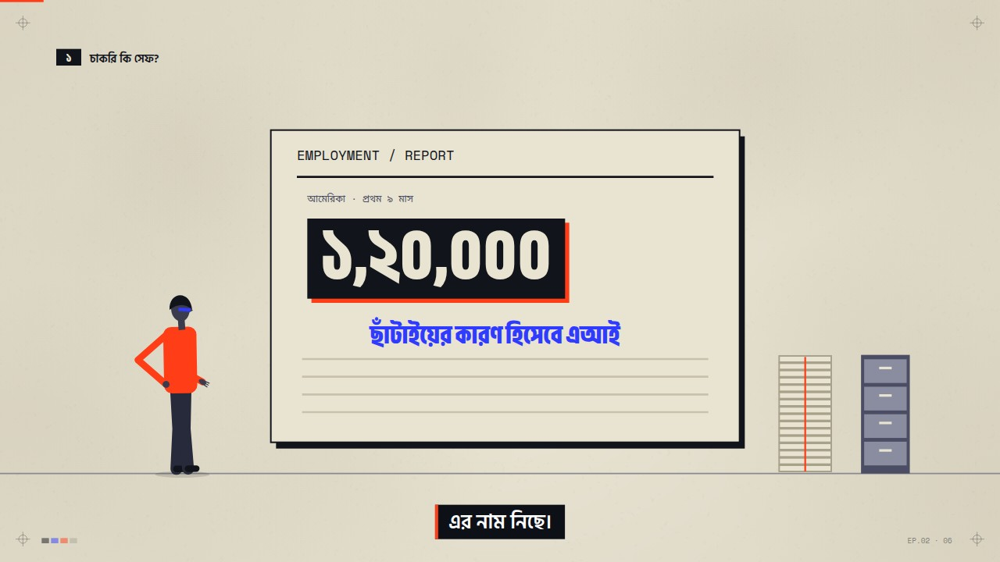
END · 27.76s · Δ 0.02Motivation: The report format distinguishes evidence from a decorative statistic. · Contact: number resolves while AI-cause caption remains attached; hands and any held prop share the same rig socket. · Weight: Standing actors shift over the supporting foot; seated actors remain anchored through hips and chair.
Follow-through: The action settles with a readable hold before cut backward into archive. · Secondary: evidence desk uses offset breathing, tool response or environmental motion without synchronized looping. · Gaze: Head direction leads toward the active hand, evidence or conversation partner.
007 · previous full-year total is retrieved
পুরা ২০২৫ সালে এই সংখ্যা ছিল ৫৫ হাজারের মতো।
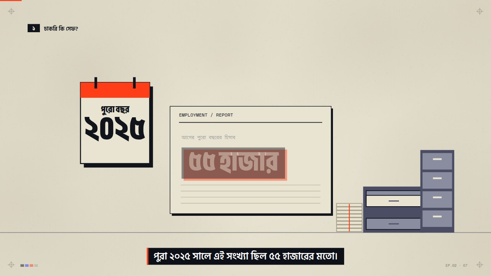
START · 28.12s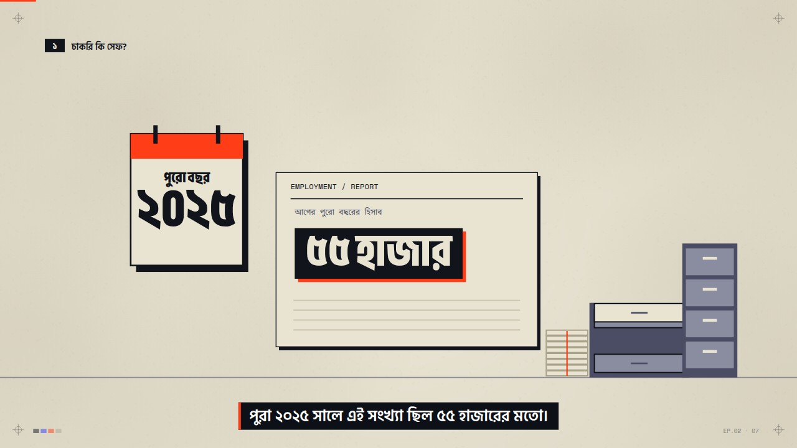
ANTICIPATION · 28.80s · Δ 3.35ACTION PEAK · 30.00s · Δ 0.00SETTLE · 31.20s · Δ 0.00END · 31.88s · Δ 0.00Motivation: The past total is established before using it in a ratio. · Contact: previous-year number holds alone; hands and any held prop share the same rig socket. · Weight: Standing actors shift over the supporting foot; seated actors remain anchored through hips and chair.
Follow-through: The action settles with a readable hold before cut to shared-scale comparison. · Secondary: records archive uses offset breathing, tool response or environmental motion without synchronized looping. · Gaze: Head direction leads toward the active hand, evidence or conversation partner.
008 · same-scale towers expose the ratio
মানে নয় মাসেই আগের পুরা বছরের দুই গুণের বেশি।
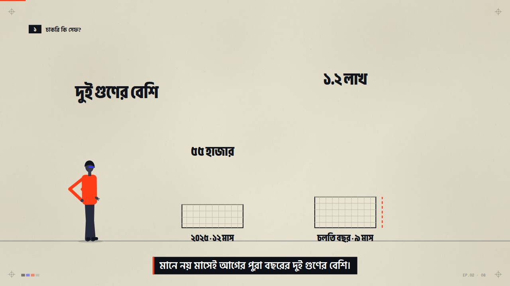
START · 32.12s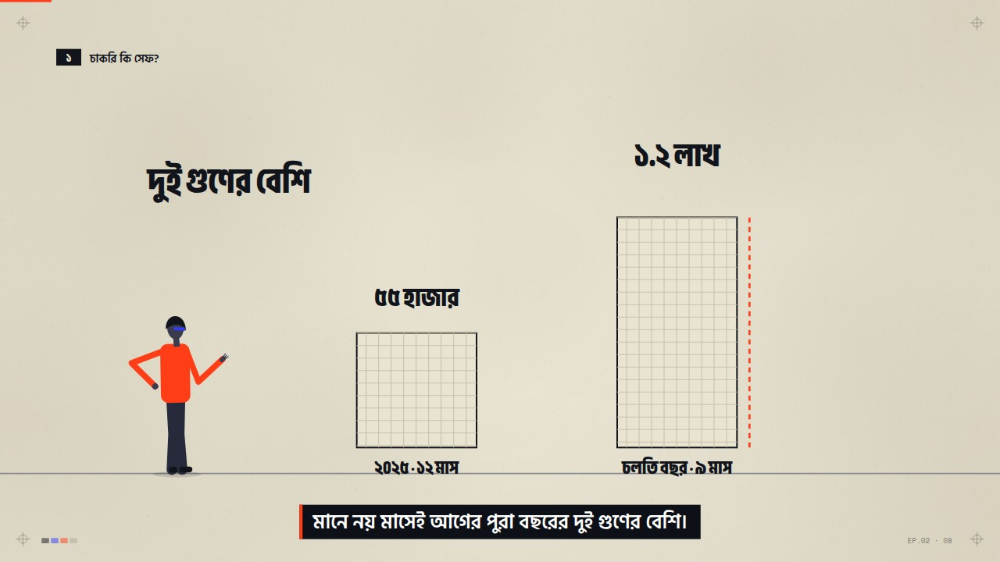
ANTICIPATION · 32.80s · Δ 0.81ACTION PEAK · 34.00s · Δ 0.39 SETTLE · 35.20s · Δ 0.14
SETTLE · 35.20s · Δ 0.14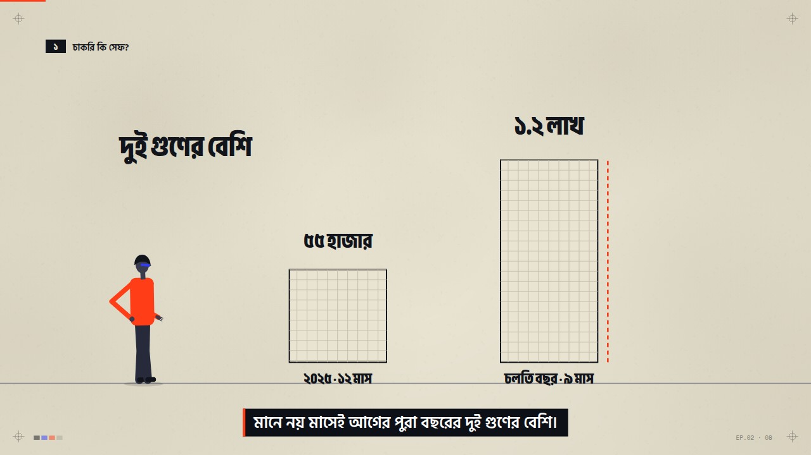
END · 35.88s · Δ 0.05Motivation: Common baseline makes the relationship visible without invented data. · Contact: 120000 tower settles above twice 55000 height; hands and any held prop share the same rig socket. · Weight: Standing actors shift over the supporting foot; seated actors remain anchored through hips and chair.
Follow-through: The action settles with a readable hold before cut to human belief on street. · Secondary: comparison stage uses offset breathing, tool response or environmental motion without synchronized looping. · Gaze: Head direction leads toward the active hand, evidence or conversation partner.
009 · guide raises the quoted belief on his phone
তাও আমরা কী বলি? "আমার কাজ এআই পারবে না।"
 START · 36.09s
START · 36.09s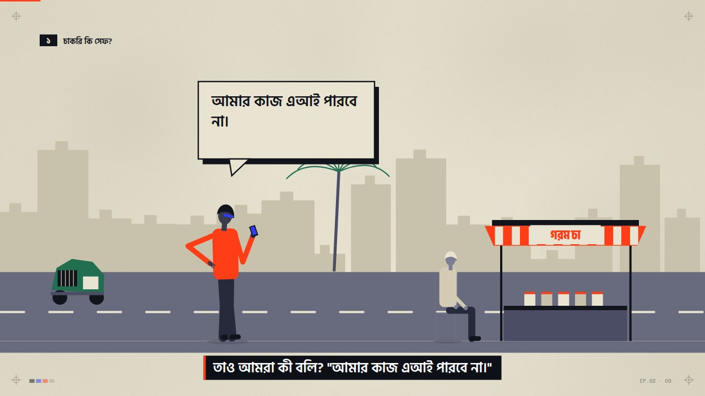
ANTICIPATION · 36.60s · Δ 0.46 ACTION PEAK · 37.50s · Δ 0.72
ACTION PEAK · 37.50s · Δ 0.72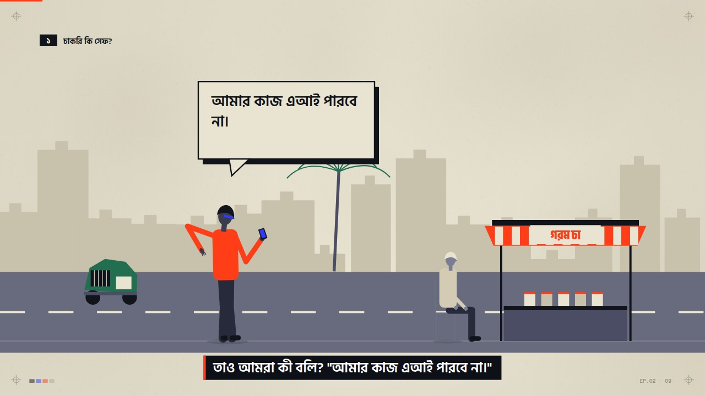
SETTLE · 38.40s · Δ 0.71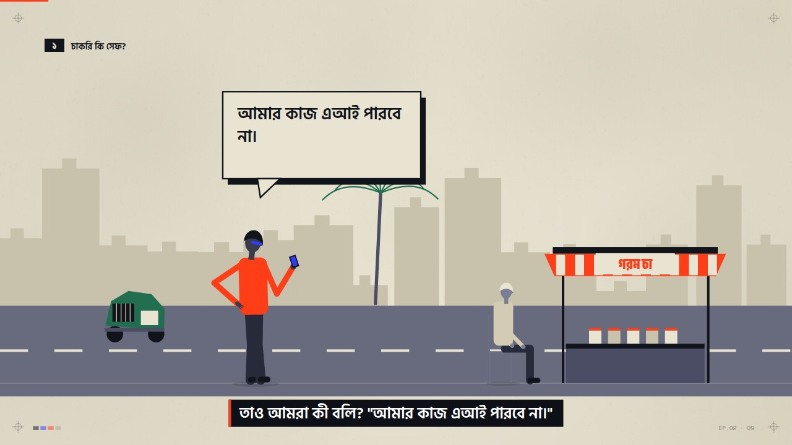
END · 38.91s · Δ 0.67Motivation: A recurring human place grounds the belief as something people say. · Contact: phone reaches eye line as claim holds; hands and any held prop share the same rig socket. · Weight: Standing actors shift over the supporting foot; seated actors remain anchored through hips and chair.
Follow-through: The action settles with a readable hold before cut into claim detail. · Secondary: established street uses offset breathing, tool response or environmental motion without synchronized looping. · Gaze: Head direction leads toward the active hand, evidence or conversation partner.
010 · magnifier tests the confidence claim
আসলেই? চলেন, একটু দেখি।
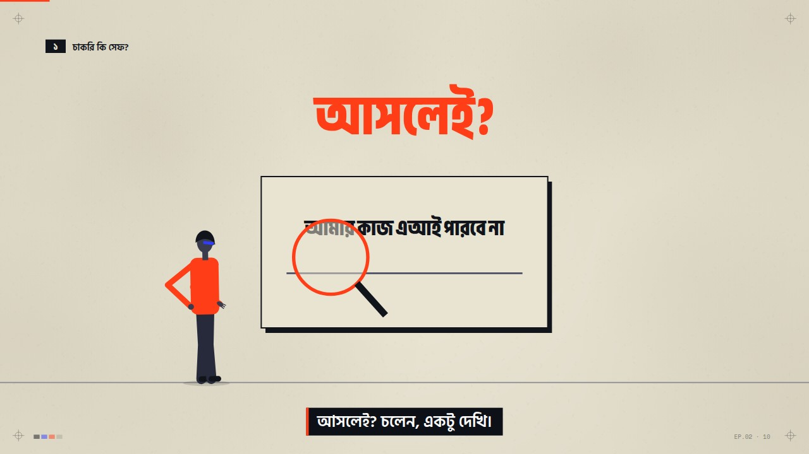
START · 39.06s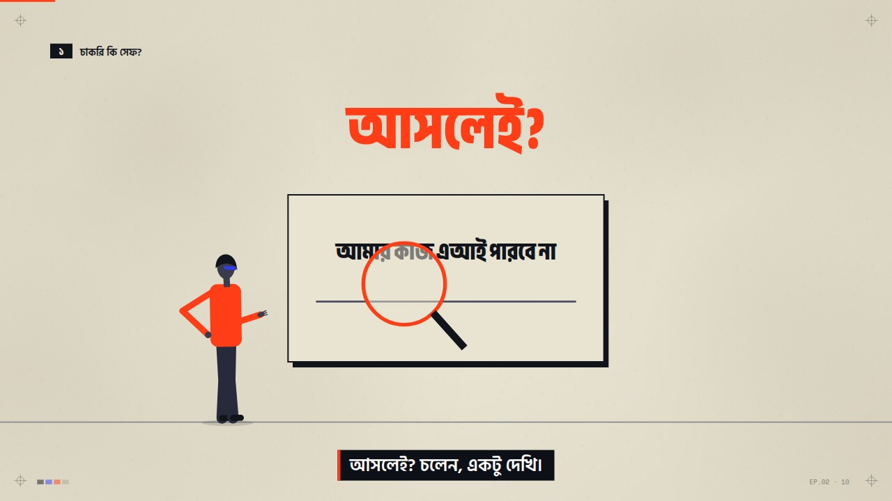
ANTICIPATION · 39.40s · Δ 0.81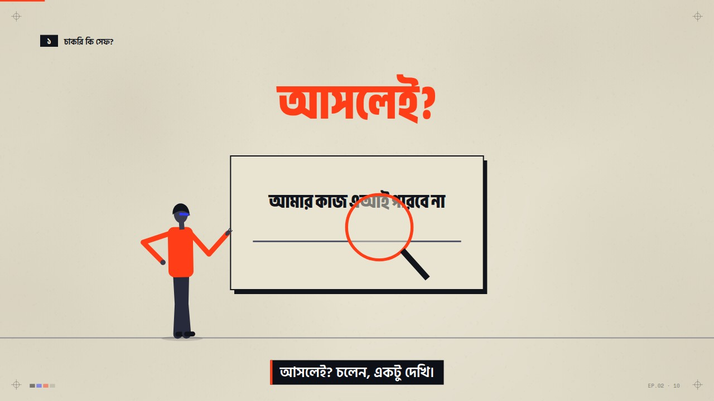
ACTION PEAK · 40.00s · Δ 1.07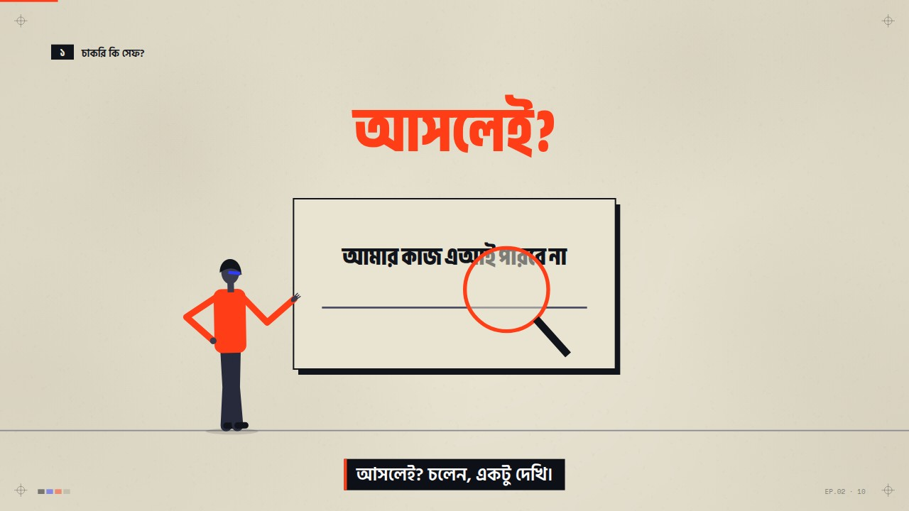
SETTLE · 40.60s · Δ 0.93 END · 40.94s · Δ 0.18
END · 40.94s · Δ 0.18Motivation: Inspection turns the rhetorical question into a visual action. · Contact: red lens rests over the confidence phrase; hands and any held prop share the same rig socket. · Weight: Standing actors shift over the supporting foot; seated actors remain anchored through hips and chair.
Follow-through: The action settles with a readable hold before blue chapter reset. · Secondary: evidence close-up uses offset breathing, tool response or environmental motion without synchronized looping. · Gaze: Head direction leads toward the active hand, evidence or conversation partner.
011 · three people voice different excuses
আশেপাশে একটু শোনেন। সবার একটা না একটা অজুহাত আছে।
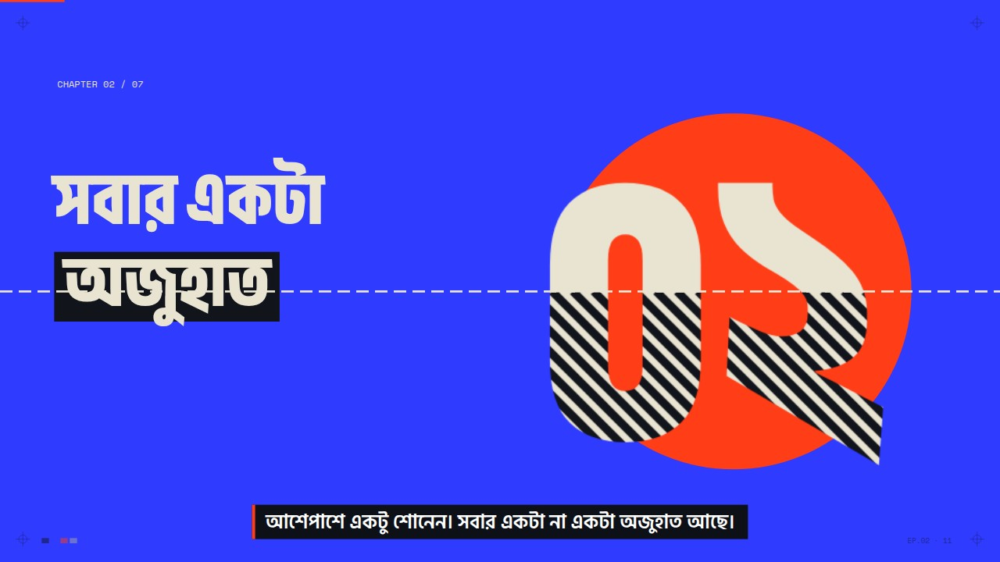
START · 41.15sANTICIPATION · 42.00s · Δ 0.00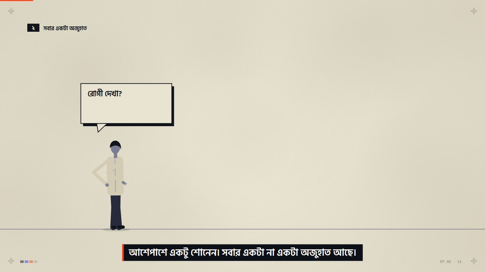
ACTION PEAK · 43.50s · Δ 87.61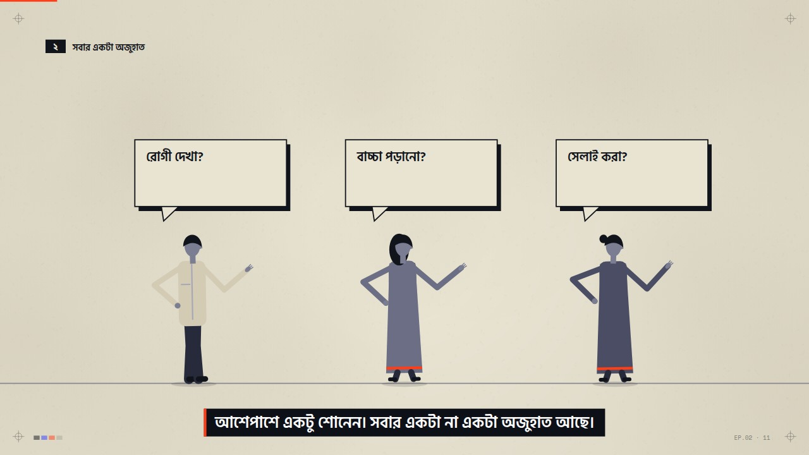
SETTLE · 45.00s · Δ 3.95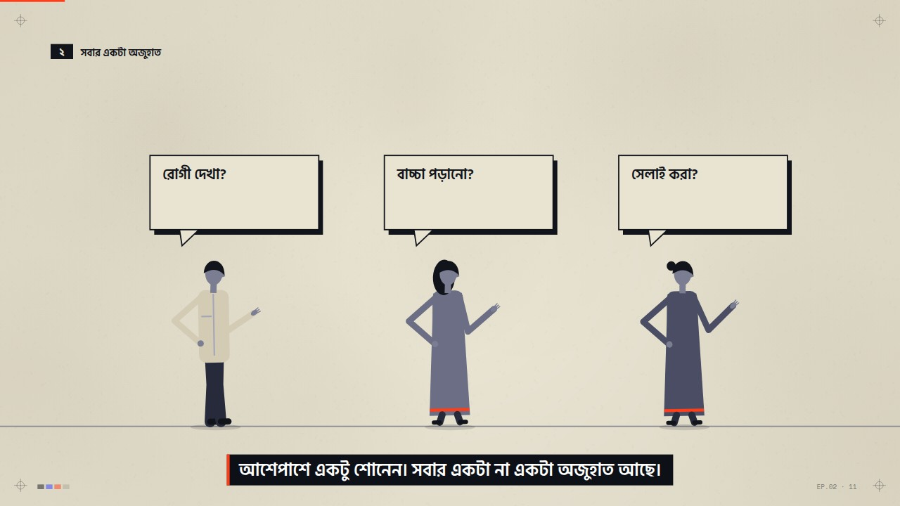
END · 45.85s · Δ 0.45Motivation: The chapter card preserves series identity before expanding the excuses. · Contact: third professional completes the chorus; hands and any held prop share the same rig socket. · Weight: Standing actors shift over the supporting foot; seated actors remain anchored through hips and chair.
Follow-through: The action settles with a readable hold before cut into first profession room. · Secondary: claim stage uses offset breathing, tool response or environmental motion without synchronized looping. · Gaze: Head direction leads toward the active hand, evidence or conversation partner.
012 · doctor checks the patient report
ডাক্তার বলে, রোগী দেখা এআই পারবে না।
START · 46.09sANTICIPATION · 46.60s · Δ 0.15ACTION PEAK · 47.50s · Δ 0.12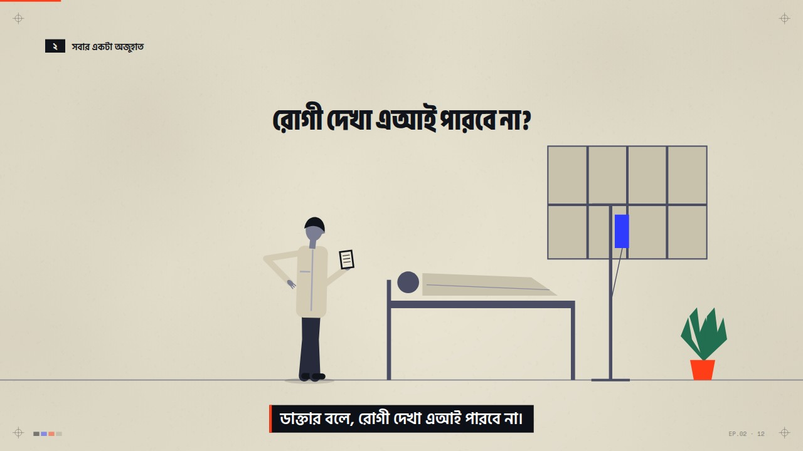
SETTLE · 48.40s · Δ 0.21END · 48.91s · Δ 0.14 Motivation: The claim is embodied by real patient work rather than a generic doctor icon. · Contact: report reaches the doctor gaze beside patient; hands and any held prop share the same rig socket. · Weight: Standing actors shift over the supporting foot; seated actors remain anchored through hips and chair.
Follow-through: The action settles with a readable hold before cut to classroom. · Secondary: hospital ward uses offset breathing, tool response or environmental motion without synchronized looping. · Gaze: Head direction leads toward the active hand, evidence or conversation partner.
013 · teacher writes while students attend
টিচার বলে, টিচার ছাড়া বাচ্চা পড়বে কেমনে?
START · 49.09s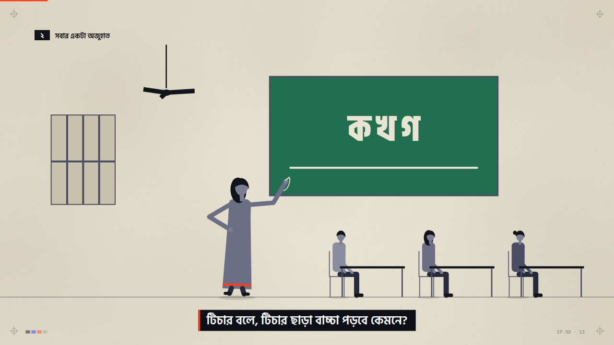
ANTICIPATION · 49.60s · Δ 0.28ACTION PEAK · 50.50s · Δ 0.13SETTLE · 51.40s · Δ 0.17END · 51.91s · Δ 0.33 Motivation: Teacher identity comes from teaching action and a populated room. · Contact: chalk touches the board as students face forward; hands and any held prop share the same rig socket. · Weight: Standing actors shift over the supporting foot; seated actors remain anchored through hips and chair.
Follow-through: The action settles with a readable hold before cut to sewing close-up. · Secondary: classroom uses offset breathing, tool response or environmental motion without synchronized looping. · Gaze: Head direction leads toward the active hand, evidence or conversation partner.
014 · worker feeds cloth through the sewing machine
গার্মেন্টসের লোক বলে, রোবট আবার সেলাই করবে নাকি?
START · 52.09sANTICIPATION · 52.60s · Δ 0.41ACTION PEAK · 53.50s · Δ 0.22SETTLE · 54.40s · Δ 0.19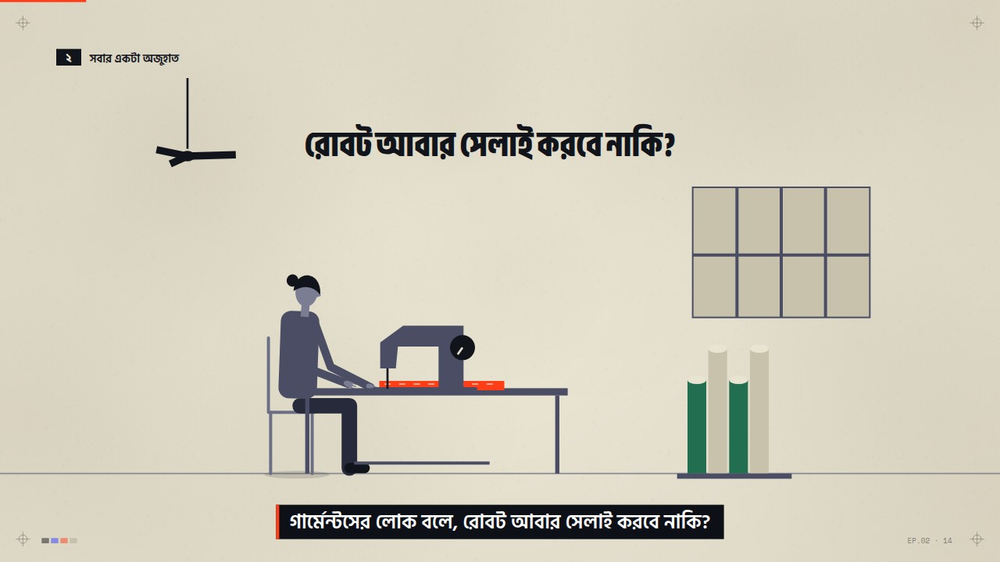
END · 54.91s · Δ 0.41 Motivation: Physical contact makes the profession credible and animated. · Contact: both hands guide cloth beneath the needle; hands and any held prop share the same rig socket. · Weight: Standing actors shift over the supporting foot; seated actors remain anchored through hips and chair.
Follow-through: The action settles with a readable hold before cut to dark AI lab. · Secondary: sewing floor uses offset breathing, tool response or environmental motion without synchronized looping. · Gaze: Head direction leads toward the active hand, evidence or conversation partner.
015 · researchers actively operate AI systems
কিন্তু মজার ব্যাপার হলো, যারা এআই সবচেয়ে কাছ থেকে দেখে, তারা কিন্তু এত রিল্যাক্সড না।
START · 55.15sANTICIPATION · 56.00s · Δ 0.04ACTION PEAK · 57.50s · Δ 0.02SETTLE · 59.00s · Δ 0.03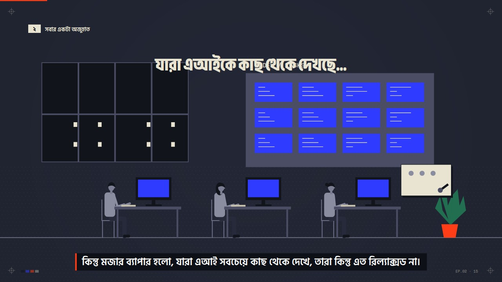
END · 59.85s · Δ 0.02 Active cue has almost no measured visual change
Motivation: Proximity is expressed through active daily work with the system. · Contact: multiple workers operate systems simultaneously; hands and any held prop share the same rig socket. · Weight: Standing actors shift over the supporting foot; seated actors remain anchored through hips and chair.
Follow-through: The action settles with a readable hold before hold into next argument. · Secondary: AI lab uses offset breathing, tool response or environmental motion without synchronized looping. · Gaze: Head direction leads toward the active hand, evidence or conversation partner.